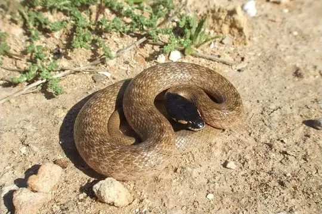
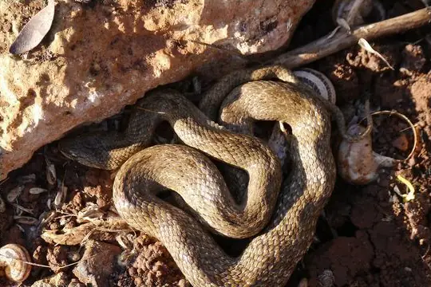
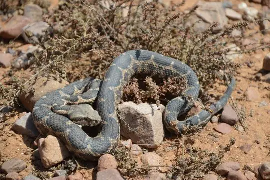
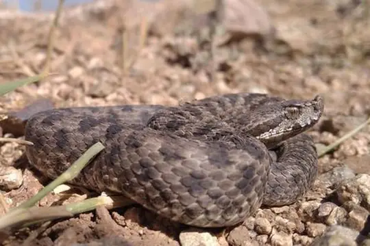
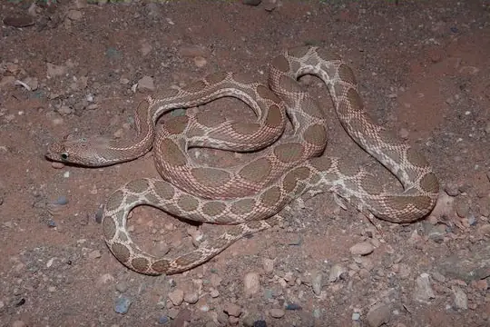
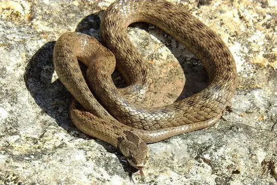

Snakes of Algeria
23 snake species are recorded in Algeria in SnakeList: 12 venomous and 11 non-venomous, from 6 families.
- 23species
- 12venomous
- 11non-venomous
- 6families
Species
Showing 23 species

Abubaker's Hooded SnakeMacroprotodon abubakeri Algerian Whip SnakeHemorrhois algirus
Algerian Whip SnakeHemorrhois algirus Awl-headed SnakeLytorhynchus diadema
Awl-headed SnakeLytorhynchus diadema Desert Horned ViperCerastes cerastes
Desert Horned ViperCerastes cerastes- No photo yetDesert ViperDaboia deserti
 Egyptian CatsnakeTelescopus obtusus
Egyptian CatsnakeTelescopus obtusus Egyptian CobraNaja haje
Egyptian CobraNaja haje Egyptian Saw-scaled ViperEchis pyramidum
Egyptian Saw-scaled ViperEchis pyramidum False Smooth Snake (cucullatus)Macroprotodon cucullatus
False Smooth Snake (cucullatus)Macroprotodon cucullatus
False Smooth Snake (mauritanicus)Macroprotodon mauritanicus Gambia Blind SnakeMyriopholis algeriensis
Gambia Blind SnakeMyriopholis algeriensis Kalahari Sand SnakePsammophis afroccidentalis
Kalahari Sand SnakePsammophis afroccidentalis Lataste's ViperVipera latastei
Lataste's ViperVipera latastei Moila SnakeMalpolon moilensis
Moila SnakeMalpolon moilensis
Moorish ViperDaboia mauritanica
Mountain Viper (monticola)Vipera monticola Sahara RacerPlatyceps saharicus
Sahara RacerPlatyceps saharicus Sahara Sand ViperCerastes vipera
Sahara Sand ViperCerastes vipera Saharan Sand SnakePsammophis aegyptius
Saharan Sand SnakePsammophis aegyptius Sand Boa (jaculus)Eryx jaculus
Sand Boa (jaculus)Eryx jaculus Striped Sand SnakePsammophis sibilans
Striped Sand SnakePsammophis sibilans
Werner's Diadem SnakeSpalerosophis dolichospilus
Western False Smooth SnakeMacroprotodon brevis
No snakes in Algeria match.
Algeria’s snakes in numbers
- Families: Colubridae 9, Viperidae 7, Psammophiidae 4, Boidae 1, Elapidae 1, Leptotyphlopidae 1.